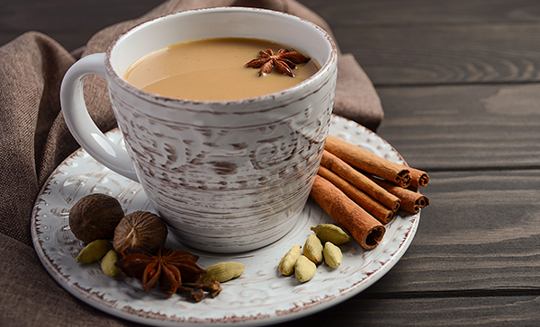

Best tea in the universe

recipe source
Ingredients:
- 50g dried ginger
- 5g nutmeg
- 15g cinnamon
- 10g black peppercorns
- 15g clove
- 15g green cardamom
- 4-5 black cardamom pods
- black tea
- milk
Dishes:
- 1 frying pan
- 1 saucepan
- 1 blender for spices / kitchen processor
How to cook:
- Dry roast all spices except ginger in a pan on low-medium flame for about a minute.
- Grind all the spices into a powder.
- Keep your masala powder in an airtight container.
- To make masala tea add 1 cup of water to a saucepan along witg 1 tsp of masala powder and 1-2 tsp of your favourite black tea to taste. Boil the tea for 1 minute.
- Add milk and let the tea boil for another 3-8 minutes (depending on how strong you like your tea).
- Strain the tea and add sugar/honey.
Done!